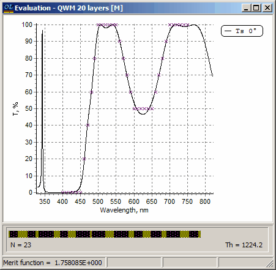

Exercise 13. Needle Optimization - further experience
Exercise 13. Needle Optimization - further experience
In this exercise we shall consider the design of a coating with non-standard spectral properties. The target function for this exercise was considered by Li Li and J.Dobrowolski (Applied Optics, 1992, vol. 31, pp. 3790-3799).
Necessary files for this exercise are located in the Problem directory EX13. In SF Mode you need to use Import Problem Directory command (File Menu).
Load GLASS substrate, and layer materials with the names 1.35 and 2.35 to memory (the names of layer materials correspond to their refractive index values).
As a supplementary exercise you can experiment with the OptiLayer option intended for entering numerical data from any ASCII file. If you don’t want to do this, then go directly to the next paragraph. To experiment with ASCII import function examine first the ASCII file Target.dat located in the same directory EX13. This file contains data for the Li Li and J.Dobrowolski target function. Note, that wavelength data in the Target.dat file are in microns while transmittance data are in absolute units, so it is necessary to set units in OptiLayer Configuration menu accordingly. Create a new file with any name using the New button in the Target database, specify the number of spectral points in the target spreadsheet equal to 36 as in the Target.dat ASCII file and then follow Help directions on Data Import (F9) and Paste Buffer (F10).
For your convenience the required target function is provided in the Target database under the name Exotic. Load this file into memory. In the Thickness Units section of the Configuration dialog switch both Thickness Units and Design Bar Display options to Optical Thickness.
Choose the Newton method (Analysis and Synthesis Options dialog).
Since the target function has a high reflection zone, we will try a quarter-wave mirror as a starting design. Load the QWM 10 layers file and run the Needle Optimization AUTO procedure. As a result you should obtain the 11-layer design with the merit function value of 5.345881.
In order to obtain better result it is necessary to use thicker starting designs. Load the QWM 20 layers file and repeat the Needle Optimization AUTO procedure. Much better solution will be obtained.
You can repeat Needle Optimization AUTO procedure with the same starting design using different optimization methods, results will be quite often different. This is connected with very complicated multi-extremal nature of thin film synthesis problems. One of often obtained solutions is shown below:

As an alternative you can use a coating with large number of layers as a starting design. Load the 50 LAYERS file from the Design database and repeat the Needle Optimization AUTO procedure.
The main conclusion of this exercise is that the performance of a coating is improving with growing design total optical thickness. To check this you can run the Needle Optimization procedure again with various starting designs and watch the total optical thickness value (Th=) indicated at the design bar in the bottom part of the Evaluation window. Another conclusion is that the total optical thickness is rather conservative parameter that is only slightly varying in the course of the Needle Optimization procedure. So thicker starting designs generally result in better solutions. On the other hand, starting design should not be too thick, because a resulting coating can be too complicated for manufacture.
The recognition of the key role of design total optical thickness has resulted in the development of a new OptiLayer synthesis strategy that is called Gradual Evolution. Go to the next Exercise to experience this strategy.